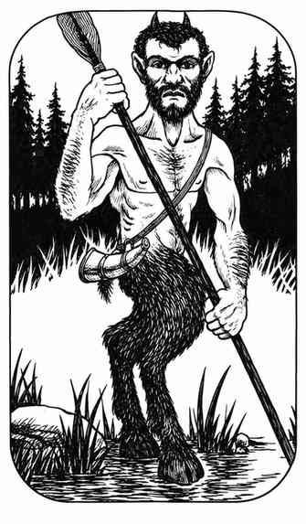

萨梯 · Satyr
 |
|
萨梯（或称牧神）只居住在林地，主要兴趣是嬉戏、吹笛和追逐树精。它们会驱逐冒犯自己的生物，有时也会被上等葡萄酒引诱或收买。萨梯通常用两根尖角顶撞；20% 的概率使用魔法武器。
萨梯可能先吹奏只有萨梯能正确使用的魔笛，使 6 寸听觉范围内的生物魅惑、睡眠或恐惧，目标可进行魔法豁免。每群通常只有一只萨梯带笛：有漂亮女性时会吹魅惑曲，对无害的闯入者会吹睡眠曲（并偷走其贵重物品），遇到强大的队伍则吹恐惧曲。通过某种笛曲豁免的生物，不再受同一支笛子的后续音乐影响。
萨梯十分安静，感官敏锐，只在 1 点时才会被突袭；它们能与树叶融为一体，对无法看穿隐藏或隐形的生物有 90% 的概率不可察觉。萨梯有自己的语言，也会说精灵语（仅林地精灵能理解）和通用语；靠近半人马的萨梯有 80% 的概率与其友善合作。上半身皮肤为棕褐至浅棕色，其他部位毛发为中棕、红棕或深棕色，角与蹄为黑色。